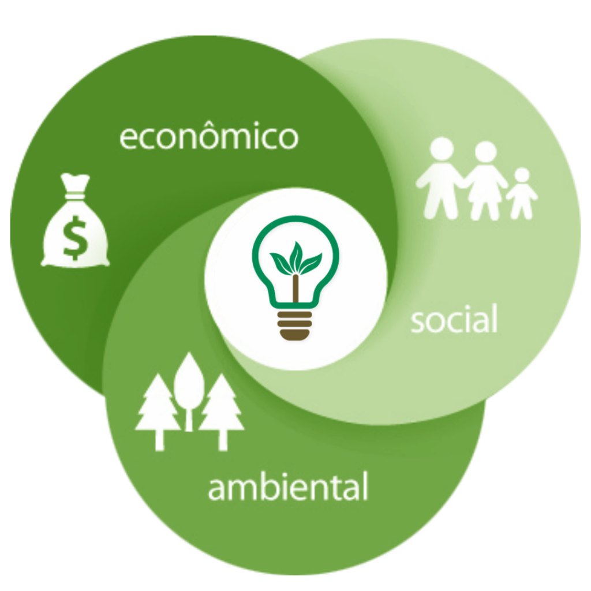

Tipos de sustentabilidade
Por se caracterizar como um conceito amplo e complexo, a sustentabilidade pode ser aplicada em diversos campos do desenvolvimento da sociedade. Entenda abaixo quais são os tipos mais conhecidos de sustentabilidade e como eles podem ser colocados em prática.
Sustentabilidade Ambiental
A Sustentabilidade ambiental abrange a conservação e a manutenção do meio ambiente. Importante notar que, para que a sustentabilidade ambiental seja efetivada, as pessoas devem estar em harmonia com o meio ambiente, para obterem melhoria na qualidade de vida.O objetivo da sustentabilidade ambiental é que os interesses das gerações futuras não estejam comprometidos pela satisfação das necessidades da geração atual.
Sustentabilidade Social
A sustentabilidade social sugere a igualdade dos indivíduos, baseado no bem estar da população. Para isso, é necessária a participação da população, com intuito de fortalecer as propostas de desenvolvimento social, acesso à educação, cultura e saúde.
Sustentabilidade Empresarial
Atualmente, muitas estratégias de responsabilidade social de empresas estão pautadas na sustentabilidade. Produtos e ações sustentáveis na área empresarial ganham destaque e o gosto dos consumidores. As pessoas estão cada vez mais conscientes do peso ecológico e social de suas escolhas.
Sustentabilidade Econômica
A sustentabilidade econômica é fundamentada num modelo de gestão sustentável. Isso implica na gestão de adequada dos recursos naturais, que objetivam o crescimento econômico, o desenvolvimento social e melhoria da distribuição de renda. Em resumo, corresponde à capacidade de produção, de distribuição e de utilização das riquezas produzidas pelo homem, buscando uma justa distribuição de renda.